Welcome
Welcome to Decker, for the Web! Decker is a cyperpunk/hacking game for Windows created by Shawn Overcash in 2001. I've been playing it sporadically for years, and finally decided to recreate it in web form.
Check the fixes made to the original game.
Check the changes made to the original game.
Check the Table of Contents for the help files of the original game.
Fixed bugs
Decker wasn't perfect (neither is this version, most likely), and had a couple bugs, which were fixed here:
- ICE generation: The maximum amount of possible enemies wasn't possible to be spawned. This is fixed in the "hard" difficulty.
- Deck View: Sorting by "Default" sorted by "Loaded" instead.
- Shop's Special Order: It allowed to order a Client program.
- Shop: Refund message for old hardware was never shown.
- Scan program: Message intended for COPs never appeared. Special image for security node only displayed when getting the map, not on scanning the node.
- Scan/Evaluate program: If the file being processed is deleted, the accumulated progress is used for the next file.
- ICE initialization: A variable wasn't initialized, causing some ICE to skip the very first turn.
- Area Generation: A contract may require the creation of extra IO after the map is generated. Their coordinates could end up negative and also can move cluster boundaries, resulting in unaligned gateways.
- Area Generation: It was possible for the map to trap itself and be unable to create a node, resulting in the program hanging.
- Contract Generation: Off-by-one error in "Run Program" missions caused client program to be size 0 when "Generic Genetics" is the target.
- Entering a portal: If a portal is silenced and an ICE is hostile, leaving the node via portal would not pacify the ICE, who will raise an alarm once Silence expires.
- On Querying: ICE were sorted wrongly, so it could happen that a weaker ICE queries when a stronger ICE is already querying.
- On Querying: If while queried, a stronger ICE queries too, the weaker should be stopped from querying. Instead, the strong one was set to an erroneous state.
Changes
Because a recreation isn't complete without extra stuff.
- New Save System, with slots. Can also export/import to files, fully compatible with the original game.
- New Option: Volume control.
- On Rest Screen: Option to wait until a new week.
- On Character Creation: Always begin with one easy contract of minimum difficulty, without enhancers, and some extra cash.
- Node's ICE generation: A but prevented the full amount of enemies possible. This was fixed and turned into the "hard" setting.
- Security Node controls: In hard difficulty, the controls aren't shown until that node is scanned or the map is found.
- On Map Zoom: Add a third mode: 3D (from unused sprites found on the original game code)
- On successful Attack: Damage image is randomized a little.
- On Map: Scrollbars removed. Map now moves when clicked or dragged.
- UpdateControls: Attack button is now enabled even without a target, if default attack is Area Attack.
- On Deck View: CTRL+UP, CTRL+DOWN to reorder programs.
- On worm-bomb exploding: Show explosion-to-bomb + damage-to-player at the same time, instead of damage-to-bomb then damage-to-player. Also, new sprite on the bomb explosion.
- On contract list: Button to accept a contract without the need of viewing it.
- New Option: Disable autoshow of "View ICE" on successful analysis.
- On View ICE: Show Analysis percentage.
- On Matrix: New key shortcut: "U", for Using a Node (to pick an action relevant to that node type.)
- Default Attack Program: Virus programs are allowed.
- On Matrix' Program List: Added new button to stop a program without unloading it. Unloading a program now takes a turn.
- Guardians and Gateways: Now only protect their home node. (It used to be that, for example, a passing gateway would block the player, then immediately move away.)
- Security Nodes: Node buttons are hidden if the security node hasn't been identified (via scan or map.)
- Ironman Save: Allowed inside the Matrix, but only before the first move.
Introduction
Welcome to the 22nd century. In the game of Decker, you are a hacker who specializes in breaking into corporate computer systems, for which you are handsomely paid. Of course, these corporations don’t idly sit by and allow you free run of their systems. The systems are guarded by Intrusion Countermeasure programs (ICE), which attempt to kick you out of the system, or possibly even kill you.
The basic equipment of a Decker is the cyberdeck. This wonderful piece of hardware plugs directly into your brain in order to allow you experience the full virtual reality world of the matrix. While in the matrix, you use programs to attempt to bypass the security measures of the corporate systems, or to crash them if all else fails.
You start out unskilled, unknown, and underequipped, but as you gain experience, you will increase your skills, hardware, and reputation in order to combat more difficult and dangerous systems. That is, if you don’t get your brain fried in the process.
How the Game is Played
In Decker, you start as a lowly unskilled hacker trying to perform a few jobs breaking into corporate systems just to pay the bills. Initially, you will only get a few low-paying contracts, but as your reputation grows, you will be awarded more difficult missions which also pay more money. The money you earn can be used to upgrade your cyberdeck to better prepare you for these more difficult missions. Of course, you also have to pay the rent. Everybody has to eat, chummer.
Each run on a system comes as a result of a contract between you and an employer who needs your services. The contract will require you to break into a particular company’s computer system and perform some action, such as stealing a file or deactivating security alarms. If you complete the contract successfully, you will receive your pay for the contract, your reputation will grow, and you will be awarded skill points with which to raise your skills. You can then use the money you have earned to buy new programs, chips, and hardware for your cyberdeck.
The object of the game, besides staying alive and paying the rent, is to move up to the highest lifestyle, and raise your skills and reputation enough to become the Master of the Matrix.
Starting the Game
To start a new game, run Decker.exe. You will be confronted with the opening Decker screen.
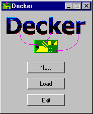If this is the first time you have played Decker, select New. You will see a window prompting you for the name of your character and the character’s image.
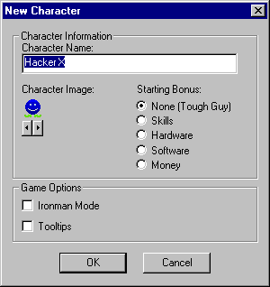Enter the name you wish for your character to go by in the field provided, then click the arrow buttons to scroll through the available images until you find one you like. You may also choose a starting bonus in the form of enhanced skills, better programs or hardware, or extra cash. Game options include:
Ironman Mode - For player who like a challenge. In Ironman mode, you are not allowed to save the game while in the Matrix.
Tooltips - Enables tooltips in the Matrix. This is off by default because it has been known to cause problems on some systems. Tooltips can also be toggled on or off from the Options screen.
Select OK to start a new game.
If you wish to load a previously save game, select Load. You will be prompted for a save game file to load.
If you change your mind and do not want to play, select Exit.
At Home
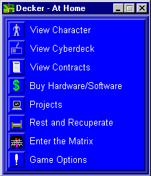When you first start a game, you will be at home. This is the place where you spend your time between runs. Here you can manage your character’s skills, possessions, and life in general. From here you can go to:
- Character Screen - To view your character’s skills, lifestyle, reputation, etc.
- Cyberdeck Configuration Screen - To manage your cyberdeck.
- Contract Screen - To view the contracts which are available, or the contract you have accepted.
- Shop Screen - To purchase hardware and software for your cyberdeck.
- Project Screen - To create your own software.
- Rest & Recuperate Screen - To heal physical damage, or just to pass time.
- The Matrix - To enter the matrix and begin the run.
- Options Screen - To load and save the game.
Character Screen
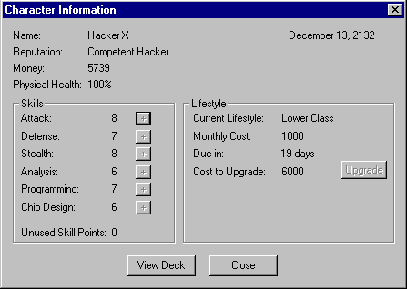The character screen allows you to view information about your character. At the top of the screen is your character’s name, reputation, money, and physical health.
To the left, your character’s skills are listed. Below the skills are your unused skill points. Skill points are gained from successfully completing missions, and are used to raise your skills. To raise a skill, you must spend a number of skill points equal to the current skill level. For example, to raise a skill from level 2 to 3 would require 2 skill points. To then raise it another point would require three more skill points. To raise a skill, click the ‘+’ button beside the skill.
To the right, your character’s lifestyle is displayed. This includes your current lifestyle, your monthly rent, the time until rent is due, and the cost to upgrade to the next lifestyle. To upgrade your lifestyle, click the Upgrade button.
Note: If you are accessing this screen from the matrix, you cannot assign skill points or upgrade lifestyles.
Contract Screen

The contract screen allows you to view a list of all contracts that are being offered to you. The list shows all the pertinent information on a contract. These fields are:
- Contract Type - What the objective of the contract is, such as activating I/O. This is discussed further later. There may be qualifiers in parentheses after the contract type. These are:
- # - Multiple targets, where the number is the number of targets.
- N - No alarms. The mission must be completed without setting a red alert.
- T - Timed mission. You must complete the mission and exit the system by a predetermined time limit.
- Difficulty - The expected difficulty of this contract, as a percent. This value is determined by the security rating of the system being infiltrated, as well as any special circumstances, such as special contract requirements. More difficult contracts pay more, and have a greater effect on skills and reputation.
- Target - The corporation that needs to be infiltrated. In parentheses is the security level of the system, which is the base rating of most ICE in the system.
- Deadline - The time left before the contract expires. If the contract is accepted, this is the number of days you will have to complete the contract.
- Pay - The amount of money you will be paid for successfully completing the contract.
Double-clicking a contract, or selecting a contract and clicking the View button, you can view more detailed information about a contract. The contracts available will depend on your current reputation.
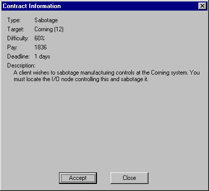This page shows more detailed information on the contract, including a text description of what is required to complete the contract. The types of contracts available are:
| Type | Target Node | Objective |
|---|---|---|
| Steal Files | Data Store | You must find the datastore in the system that contains the file and download it. This is a common mission, as corporate espionage often involves information theft. |
| Steal and Erase | Data Store | Same as above, but you must erase the file after downloading it. Some corporations want to be the only person to possess certain information. |
| Erase Files | Data Store | Same as above, but you only have to erase the file. This is often to erase evidence, or simply to create problems for the target corporation. |
| Alter Files | Data Store | You must find a file as above, and then edit the file. Because of its nature, this type of mission often requires you to complete it without being detected by system security. |
| Activate I/O | I/O | You must find the I/O node in the system that controls this I/O, and activate it. Often this type of mission is used to create confusion at the target corporation site. |
| Deactivate I/O | I/O | You must find the I/O node in the system that controls this I/O, and deactivate it. This often includes shutting down security systems so a team of infiltrators can enter the corporate site. |
| Sabotage | I/O | You must find the I/O node in the system that controls this I/O, and sabotage it. Cry havoc and let loose the cyberdogs of war. |
| Crash System | CPU | You must locate the CPU and crash the system. Even more meanness. |
| Create Backdoor | CPU | You must locate the CPU and create a backdoor into the system. This is usually so that a decker from a rival corporation can enter the system at a later date. |
| Run Program | Varies | The client will supply a program which you must run in a specific node in the target system. When you run the program, it will point out which node you must run the program in. You must go to the specified node and run the program, then wait for it to complete before leaving the node. While the program is running, you will take a penalty to all skills rolls. |
New contracts will filter in as old ones expire. Also, new contracts become available each week. If no contracts are available, just rest until new ones are available.
If you are currently on a run, the contract window will show the current status of the contract. Each objective will be listed with a letter indicating its completion status, as follows:
- (C) = Complete
- (I) = Incomplete
- (F) = Failed
Shop Screen
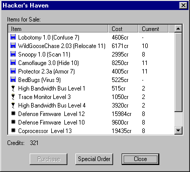The shop screen is where you can purchase upgrades for your cyberdeck. Listed are the items for sale, their cost, and the level of item that you currently own. Your current credits are displayed at the bottom of the screen. The quality of items available is determined by your current lifestyle. To purchase an item, select the item and click the Purchase button. Note that you are not allowed to purchase an item which you already own, or any hardware which is of a lesser rating than that which you already own. New items become available at the end of each week.
If you really need a particular item that is not for sale, you can special order the item (at a substantially increased cost). To do so, click the Special Order button.
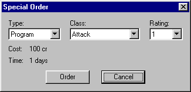Select the item type, classification, and rating. The cost for that item and shipping time will be displayed below. If you wish to order the item, click the Order button. You may only have one item on order at a time. After the specified time has elapsed, the item will automatically be added to your cyberdeck.
For more information on the types of items you can buy, see the appendices on programs, chips, and hardware.
Project Management Screen
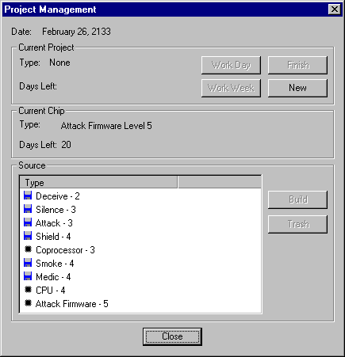The project management screen is where you can create your own programs and chips. If you can’t find what you are looking for at the shop, or you can’t afford it, come here and build it yourself.
At the top of the screen the current date is displayed. This is useful for keeping track of when rent is due, or when new contracts and shop items will appear. Below this you will find information on your current programming project, if any. Displayed are the type of project and the estimated time until completion. The buttons available are:
- Work Day - Work on the project for one day only.
- Work Week - Work on the project until the end of the week (when new contracts and shop items become available.)
- Finish - Work on the project until it is finished.
- New - Start a new project. See Starting a New Project below for information on starting a new project.
In the middle of the screen is information on what chip you are currently cooking, if any. The type of chip and days until completion are displayed.
At the bottom of the screen is a list of all the source code you have completed. Source code is the intermediate form of a program. When a project is complete, the source code is added to your list. To actually produce a program or chip, select the source and click the Build button. You can sort the list of source codes by clicking on a column header.
For programs, the build process is simply compiling the source into an actual program. You will be asked to name the new program, and then the program will be added to your cyberdeck. You also have the option to load the program into the deck, and to unload or trash all other programs of the same type.
For chips, the build process entails writing the chip code onto a blank optical chip using a chip burner. This is called cooking, and will take several days, depending on the complexity of the chip and the quality of the chip burner. At the end of the cook time, the chip will automatically be added to your cyberdeck. If you do not have a chip burner you may still design a chip’s source code, but you will not be able to build the actual chip.
Starting a new Project
To start a new project, click the new button. The new project dialog window will open.
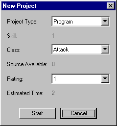First, select the project type: Program or chip. (You cannot create cyberdeck hardware.) Your current skill level (programming or chip design) will be displayed.
Next, select the class of program or chip you wish to design. The Source Available field will show you the highest level of source code you have for this class, if any. If no source exists, you will be creating the program from scratch. If source does exist, you will be upgrading the code to a new level, which will shorten the overall time.
Finally, select the rating you desire. Your current skill level (programming or chip design) limits the maximum rating you can attempt. For example, if you have a programming skill of 3, the maximum level of program you can create is also 3.
The Estimated Time field will show the approximate time for completion. Depending on the complexity of the program in relation to your skill level, more time may eventually be required. Click the Start button to start the project, or Cancel to abort.
Rest & Recuperate Screen
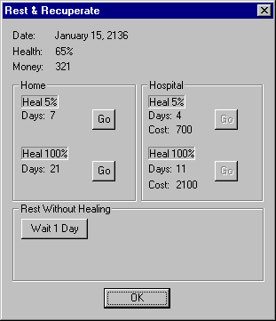The Rest & Recuperate screen is where you can heal any physical wounds the character has, or simply waste some time. At the top of the screen you will see the current game date, your health, and your money.
The middle of the screen is used for healing any physical damage you character has. Healing requires rest; The more hurt you are, the more rest you will require. Staying in a hospital can speed up the healing process. However, hospitals cost money. You can choose to heal yourself in 5% increments, or rest until fully healed. The time for healing and the rates for hospital stays are listed for both methods. Make sure you can pay your rent before resting long periods of time.
Cyberdeck Configuration Screen
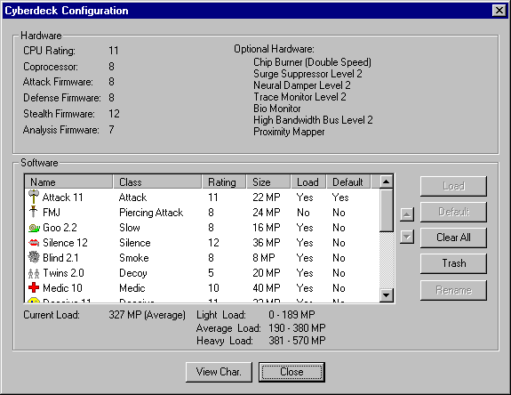The Cyberdeck Configuration screen allows you to, you guessed it, configure your cyberdeck. At the top of the screen is a display of the ratings of the chips currently installed in your cyberdeck, along with any optional hardware.
At the bottom of the screen is a list of the programs that you possess. Listed with each program is its name, class, rating, and size, in memory points (MP). The size of a program affects your total load rating, as well as the time load the program while in the matrix. Also listed is the load status of the program. A Yes in the Load column means that the program is automatically loaded into the cyberdeck whenever you enter the matrix. This saves you from having to load the program from within the matrix, which takes time. The default column indicates whether this is the default program of its class. One attack program, including normal, area, or piercing attack, can be selected as the default attack program. This is the program that is run when you click the Attack button in the matrix. You can also select a default Armor, Shield, and Hide program. These programs will automatically run when you enter the matrix.
Below the program list is information on your current load rating, and the load rating ranges. Your load rating is a measure of how many programs are loaded into the cyberdeck at once. The cyberdeck has a limited amount of processing power, and too many programs loaded at once will create performance lags. A heavy load rating will create a penalty to all actions in the matrix, while a light load rating gives a slight bonus.
Click Load/Unload to load/unload the selected program. Click Default to make this program the default program. Click Clear All to unload all programs. Click Trash to permanently delete a program. Click Rename to rename a program. Click on a column header to sort the list of programs.
The Sound Effect button allows you to customize the sound effect for a given program. Clicking this button will open the Sound Effect Selection dialog window. In this window you can select which sound effect you want to play when the program is run. The sounds available are:
- None - No sound effect.
- Default - The default sound effect for the selected program class.
- Custom1..20 - Custom sound effects set up in the Decker.ini file. See Customization for more details.
Customization
Decker allows you a certain degree of customization for your character.
Custom Sounds
All of the sound effects for Decker may be changed by the user if so desired. The Decker.ini file (located in the install directory) lists all of the sound files used in the game. These sound files must be located in the \Sound subdirectory. To change a sound effect in the game, simply change the entry for that option in the INI file.
Sound effects for programs are a little different. Each program in the game can have a sound effect associated with it. Initially, a program will use the default sound effect specified for its class. You can change this through the Cyberdeck Configuration screen’s Sound Effect button. To load custom program sounds, put the wave files in the \Sound subdirectory, and fill in one of the CustomSoundX entries. These custom sounds will then be available for a program.
Custom Skins
You can now create custom skins for the game. By default, the game loads its graphics from the DefaultGraphics directory. This directory contains the bitmaps used in the game. If you wish to create a custom skin, you edit these graphics to suit your tastes. If you wish to keep more than one skin you can simply change the Directory key in the [Graphics] section of the Decker.ini file.
Custom Character Images
You can now change the character image bitmap located in the directory with all other graphics, as detailed above. The bitmap must remain 24 pixels high, but any number of character images can be added lengthwise. All character images are 24x24 pixels.
Health
Character Health
Your character is rated by three different health ratings: Physical, Mental, and Deck. Each of these items can be damaged by ICE in the matrix. As your health decreases, it will become harder for you to successfully perform actions within the matrix. In effect, you will have a penalty for all actions as long as your health is damaged. The amount of penalty is relative to the amount of damage you have taken.
Deck Health is the only health you should be worried about early in the game, as it is the one that most ICE affect. Deck health represents the stability of your cyberdeck and its ability to remain connected to the matrix. When most ICE attack you, they are attempting to reduce this stability to the point where you are forced to leave the system (dumped). Deck health can be restored by a Medic program. Also, deck damage only carries half of the performance penalty of other forms of damage.
Mental Health is a measure of your alertness and cognizance. Mental damage is equivalent to stun damage. Mental health is only damaged by Killer ICE. Killer ICE attempts to send high level neural feedback (in effect, a brain ‘power surge’) through your cyberdeck directly into your brain, causing mental damage. As your mental health decreases, you become dizzy and confused. When it is gone, you pass out, and are dumped from the matrix. Within the matrix there is no way to heal mental damage. Mental health is only restored when you leave the matrix.
Physical health is just what it implies: a measure of how well you are physically. Physical health is damaged whenever your deck or mental health is exhausted. If you are dumped from the matrix due to deck damage or mental damage, any excess damage will become physical damage. Once your physical health is gone, you are dead (brain fried). Physical health can only be restored by resting outside of the matrix.
ICE Health
ICE also has a health rating. This represents the ICE’s integrity as a program. Attack programs attempt to reduce this integrity to a point where the ICE crashes. As an ICE’s health becomes damaged, the ICE suffers penalties just like a player.
The penalties associated with low health are show below:
| Health | Penalty to Actions |
|---|---|
| 100% - 85% | None |
| 80% - 65% | 5% |
| 60% - 45% | 10% |
| 40% - 25% | 15% |
| 20% - 5% | 20% |
Notes:
- Penalties for deck health are halved.
- Only the lower of the physical and mental health penalties is used for penalty calculations. All other penalties are cumulative.
Skills
Your character’s skills are a measure of how good he is at various aspects of decking. All skills are rated from 1 to 20 or higher. The skills your character possesses are:
- Attack - This is a measure of how good you are at utilizing programs that attempt to damage or otherwise impair ICE, such as Attack or Virus programs.
- Defense - This is a measure of how good you are at utilizing defensive programs, such as Shield and Armor.
- Stealth - This is a measure of how well you use programs designed to help you avoid detection in the system, such as Hide and Deceive programs.
- Analysis - This is a measure of how good you are at using programs that gather information from a system, such as Scan and Analyze programs.
- Programming - This is a measure of how good you are at creating a program, rather than using it. Your programming skill determines the maximum level of program that you can create, and how long it takes to create a program.
- Chip Design - Similar to programming, this skill allows you to design chips for your cyberdeck. Note that to actually build a chip you design, you must have a chip burner.
You can increase you skills from the Character Information screen, assuming you have enough free skill points. Skill points are awarded for successfully completing contracts. It is important to remember that as your skills grow higher, it will take more difficult contracts to keep giving you skill points. A skilled decker completing an easy contract won’t learn anything.
Lifestyle
Your character’s lifestyle is a measure of the quality of life he enjoys. A higher lifestyle means a higher standard of living. Your lifestyle determines what types of items are available in the shops, how well contracts pay, and how high your reputation can climb. There are five levels of lifestyle:
| Lifestyle | Monthly Cost | Cost to Upgrade to Next Level |
|---|---|---|
| Poverty | 500 | 3000 |
| Low | 1000 | 6000 |
| Medium | 2000 | 12000 |
| High | 4000 | 30000 |
| Elite | 10000 | - |
Rent is due on the first of the month (just like in real life). If you can’t pay your rent, your lifestyle will be downgraded to the lowest level you can afford. If you don’t have enough for a poverty lifestyle, your game will end.
Reputation
Your character’s reputation represents how well he is known, and whether or not he is viewed as a dependable decker who can complete the contracts assigned to him. Your reputation determines what contracts are available to you. A higher reputation leads to more difficult, but better paying contracts. Your reputation will increase from completing contracts, but will decrease if you fail to complete a contract.
Your reputation is limited by your lifestyle. At some point your reputation will stop rising until you upgrade to the next lifestyle. This is because a higher lifestyle gives access to better communications channels which lets your character be better known in the hacking business, and also gives you access to better contacts. If your reputation display in the character information screen says (max), then you have reached the maximum reputation possible for you current lifestyle.
Hints & Tips
Here are some hints and tips for succeeding at the game:
- Never pass up an opportunity to grab some extra cash by downloading valuable files from datastores.
- Always have an Armor and Hide programs running. The Hide will allow you to bypass many ICE automatically, and the Armor will help reduce the damage you suffer in combat. Also, have a Shield program running, if possible.
- Silence is golden. If you are going to attempt to bypass an ICE when the system is already in yellow alert, silence the node. This will keep the ICE from calling in reinforcements if you fail to bypass it.
- Stealth is probably the most important skill. With a high enough stealth, you can raid a system without ever being detected.
- Make sure what you kill stays dead. Do this by locating the ICE entry port and deactivating it. Until you shut this node down, all crashed ICE will continue to return to the system.
- Make locating the CPU/SPU a high priority. From this node you can get a system map which reveals all of the important nodes in the area.
- When being chased by hostile ICE, create a Smoke screen in a node with multiple exits and then leave. The ICE will lose track of you, and may not choose the correct exit.
- Upgrade your CPU before any of your other chips, because the CPU limits the effective level of all other chips.
- No good contracts available? Spend some time creating a new program or chip.
- Surge suppressors, Neural Dampers, and Bio Monitors are only useful once you meet some heavy-duty ICE at higher difficulties, so hold off on buying them. Go for trace monitors, high bandwidth buses, and chip burners first.
- Upgrade your CPU and coprocessor before using higher rated programs, because your system may become overloaded.
- Don’t upgrade your lifestyle as soon as you get the money. Wait until your reputation has reached its limit for the current lifestyle. You need a high reputation to get the contracts to pay for an upgraded lifestyle.
- If probes are giving you headaches, lure one alone into an empty node, run a silence program, and kill it. Probe ICE can’t fight back, and all ICE are too stupid to run from battle.
Programs
Programs are the tools of the trade for deckers. Programs allow you to navigate corporate systems to perform the actions you need. Programs can be bought at the shop, or created by you through programming if you have the time and skill. The programs available are:
| Program Class | Skill | Affects | Description |
|---|---|---|---|
| 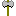 Attack | Attack | Targeted ICE | The basic attack program is used to attack an ICE in order to cause it to crash. Each successful ‘hit’ by this program will reduce the health of the target ICE. When the ICE’s health is gone, the ICE crashes. Attacking an ICE immediately reveals your hostility to all ICE in the node, who will attempt to set the system alarm and possibly attack you. |
| Area Attack | Attack | All ICE in node | This is a modification of the standard attack program that makes a reduced-strength attack at all ICE in the node. Against Phasing ICE, this program acts at normal strength. |
| 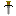 Piercing Attack | Attack | Targeted ICE | This is a modification of the standard attack program that has a higher chance of hitting the ICE, but does reduced damage. Against Hardened ICE, this program does normal damage. |
| Slow | Attack | All ICE in node | This program attempts to make the system run ICE programs at a reduced priority, in effect ‘Slowing’ the ICE. As long as an ICE is slowed, it will skip every other combat turn. |
| 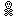 Virus | Attack Stealth | Targeted ICE | This is a subtle form of attack. A virus program does damage over a number of turns, rather than immediately. As an added bonus, the ICE may not notice the attack, depending on your Stealth rating. |
| Confusion | Attack | Targeted ICE | A confusion program attempts to ‘rewire’ an ICE’s logic algorithms so that is behaves erratically. While an ICE is confused, it may attack anything it sees, raise an alarm, or just wander stupidly. |
| Weaken | Attack | Targeted ICE | A weaken program attempts reduce the strength of an ICE. While weakened, the ICE will perform as an ICE at a rating of four below normal. |
| Silence | Stealth | Node | This program attempts to make a node ignore all alert attempts from the ICE in it. While a node is silenced, any ICE in it cannot raise an alarm, or summon other ICE from outside the node. However, any ICE in the node that tries to raise an alert while silenced will automatically become hostile. A silence program seldom fails to run, but the node may only be silenced for one turn if your stealth rating is too low. |
| 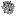 Smoke | Stealth | Node | A smoke program is essentially a long burst of static that reduces the tracking abilities of everything within the node. While in a smoked node, your defense and stealth ratings are improved by four, but your attack and sensor ratings are lowered by four. Also, if you leave a node that is smoked, all ICE in the node who were attacking or following you will lose track of you. This makes the program invaluable for escaping hostile ICE. |
| Decoy | Stealth | Decker | A decoy program attempts to create multiple ‘ghost images’ of your character in the node. These images cannot attack, but have a defense rating equal to yours. Any ICE that attempts to attack you will be unable to tell you from a decoy, and will randomly pick a target. Once a decoy takes any damage, it is destroyed. Be warned that using a decoy will impose a severe penalty to the effectiveness of your Hide program, and any ICE which attempts to query you while a decoy is active will set an alarm. |
| Armor | Defense | Decker | An armor program attempts to deflect attacks made by ICE, in essence raising your defense rating. Once activated, the Armor program stays active indefinitely. |
| Shield | Defense | Decker | A shield program acts similar to an armor program, but instead of deflecting damage, it absorbs it. A shield program stays active until it absorbs an amount of damage equal to its rating, at which point it crashes. |
| Medic | Defense | Decker | A medic program restores your deck health. The amount of health restored depends of your defense rating versus the system rating. Each time a medic program is used, its effective rating is reduced by one. |
| Hide | Stealth | Decker | A hide program attempts to make your signal in a system appear as ‘line noise’. Any ICE which are fooled by this program will ignore your character. This program does not affect hostile ICE, however. The hide program runs continuously once activated. It automatically attempts to bypass any ICE you encounter, as needed. |
| Deceive | Stealth | Targeted ICE | A deceive program attempts to generate a false passcode so that an ICE will believe you are a legitimate user. Use this program to bypass an ICE that has queried you. This program does not affect hostile ICE. If the deceive program fails, the ICE will attempt to set a system alert. |
| 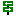 Relocate | Stealth | Trace | A relocate program attempts to reroute or hide your entry point into the system. This will cancel any trace that is currently in progress, but will not protect you from future trace attempts. |
| Analyze | Analysis | Targeted ICE | This program attempts to analyze an ICE to see exactly what it is made of, so to speak. If successful, more information will be available in the ICE Data window. Also, any ICE which has been analyzed will be a little easier to combat (-1 .. -5 to ICE rating, depending on success of analyze program). |
| Scan | Analysis | Node | A scan program attempts to look for important things in a node. In an I/O node, the program will tell you what type of I/O the node controls. In a datastore, this program will scan all files in the node to ascertain their contents. Scanning files takes several turns, depending on the rating of the scan program and how big the files in the node are. Files which are guarded by tapeworms will not be scanned unless the ICE has been bypassed with a deceive program. Scanning a file reveals the type of data stored in the file. |
| Evaluate | Analysis | Node | Similar to a scan program, the evaluate program is only used in datastores. This program will analyze the contents of all files that have been scanned and determined to hold data which may of use to the decker. Valuable files will display their value in credits, while Passcode and Clue files must be evaluated in order to gain their particular benefits. |
| 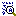 Decrypt | Analysis Stealth | Targetted ICE (Tapeworm only) |
A decrypt program attempts to defeat a tapeworm ICE so that its contents can be accessed. If successful, the tapeworm will automatically crash, leaving the file unharmed. If it fails, the tapeworm may notice the attack, depending on your stealth rating. |
| Reflect | Defense | Decker | A reflect program attempts to reflect some or all of the damage done to the decker back at the attacking ICE. If the program fails, there is a small chance that it will crash. |
| Attack Boost Defense Boost Stealth Boost  Analysis Boost Analysis Boost |
Varies | Decker | Booster programs boost the effective rating of the decker for a short period of time. Only one boost program can be active at a time, and the program degrades one level per turn it is active. |
| Client Program | None | Node | This is a special program supplied by the client for a specific job. It is only available for the duration of the contract. This program could be anything from a virus to a communications snooper, but that’s not your concern. You only need to know where to run it. Mr. Johnson likes to leave things on a need-to-know basis. |
Programs must be loaded into the cyberdeck in order to be run.
Chips
Chips are the primary driving force of your cyberdeck. They may be bought at a shop or created by you through programming and a chip burner. Your cyberdeck uses the following chips:
CPU - This is the heart of the cyberdeck. This chip controls all of the other chips, runs all programs, and is responsible for your interface with the matrix. No other chip on the cyberdeck may function at a level higher that the CPU. For example, if you have a rating 3 CPU and a rating 4 attack firmware, the attack firmware will operate at a level 3 rating. The CPU, along with the Coprocessor, also determines your load rating levels.
Coprocessor - This chip helps out the CPU by running some of the more tedious portions of program code. In effect, it raises the load rating levels for your cyberdeck.
Attack Firmware - This chip helps run all attack programs. This chip and your attack skill determine your attack rating.
Defense Firmware - This chip helps run all defensive programs. This chip and your defense skill determine your defense rating.
Stealth Firmware - This chip helps run all stealth programs. This chip and your stealth skill determine your stealth rating.
Analysis Firmware - This chip helps run all analysis programs. This chip and your analysis skill determine your analysis rating.
Chips can be only damaged by Trace & Fry ICE.
Hardware
There are many optional pieces of hardware that can be added you your cyberdeck. These items can be bought, or ordered, from a shop. The hardware items available are:
| Hardware | Ratings | Description |
|---|---|---|
| Chip Burner | 1 - 4 | Allows you to burn chips for your deck. Higher rated burners decrease the burn time. |
| Surge Suppressor | 1 - 5 | Blocks electrical surges triggered by Trace & Fry ICE, reducing the chance that a chip will be fried. |
| Neural Damper | 1 - 5 | Blocks neural surges triggered by Killer ICE, adding to your defense versus these attacks. |
| Trace Monitor | 1 - 3 | Adds a display to your cyberdeck that shows the progress of any traces against you, and also adds to your attempts to use Relocate programs. |
| Bio Monitor | 1 - 2 | Adds a display of your mental and physical health to your cyberdeck. A level 2 Bio Monitor includes an AutoDump feature which will automatically disconnect you from the matrix if your brain starts to flatline. |
| High Bandwidth Bus | 1 - 5 | Decreases the time to load programs and download/edit files. |
| Proximity Mapper | 1 | Shows all adjacent nodes on the matrix map. |
| Design Assistant | 1 - 3 | An expert system that decreases the time required to design a program or chip. Also slightly reduces the chance of a design flaw. |
| AntiTrace Proxy | 1 | A remote system which acts as a bridge from your deck to the Matrix. It is designed to self destruct if an extended trace reaches it, which prevents law enforcement officials from finding you. |
In general, the effectiveness of a piece of hardware increases with its rating.
The Matrix Screen
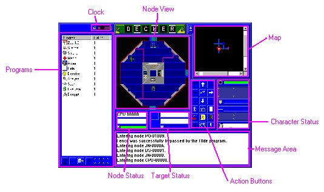This is where the fun stuff happens. The matrix screen represents your interface with the system that you are trying to infiltrate. All activity in the system takes place on this screen.
Character Status Windows
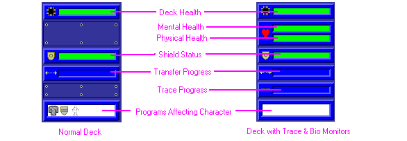On the right side of the screen are several windows which display the character’s status, as show above. The Deck, Mental, and Physical health bars show your character’s health. At 100% health, the bar will be completely filled in green. As you take damage, the bar will shorten and turn yellow then red. The shield status bar shows the current strength of your Shield program, relative to full strength. The transfer and trace progress bars show the progress of any active file transfer or trace, respectively. The bottom bar shows an iconic view of any programs currently affecting the character. The mental and physical health bars will only be displayed if you have purchased a bio-monitor. The trace bar will only be displayed if you have purchased a trace monitor.
Node View Window
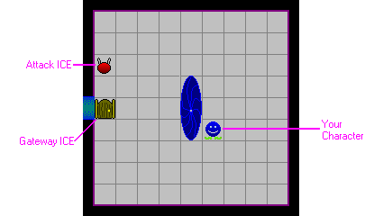In the center of the screen is a view of the current node. Your character will be displayed here, along with any ICE present in the node. You may click on an ICE to target it.
Node Status Area
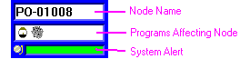Below the node view to the left is the node information area. This area shows the name of the node you are in, any programs currently active in the node, and the current system alert (Green, Yellow, or Red). If the system is preparing to shut down because of an intruder alert, the system alert bar will be purple.
Target Status Area
Below the node view to the right is the target information area. If an ICE is targeted, this area will show a picture of the ICE, the name of the ICE, any programs currently affecting the ICE, and the ICE’s health. The background color of the ICE picture denotes the status of the ICE. Green is normal, yellow means this ICE has queried you and is waiting for a response, and red means this ICE is hostile.
Map Window
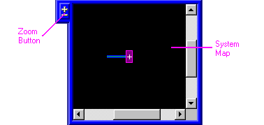In the upper right of the screen is the system map. This shows all of the nodes you have visited, along with the connections between them. You may click the +/- button to toggle between zoom levels. If you get the area map from a CPU/SPU node, all nodes in the area will be shown.
Program List
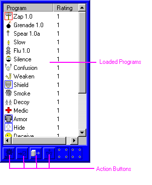On the left side of the screen is a list of all programs which are currently loaded in your cyberdeck. The name of the program is displayed, along with the rating. If the current rating of a program is lower than its normal rating, the normal rating will be displayed in parentheses. For example, if you have a level 4 shield program that has taken 2 points of damage, the display will show 2(4). A red box around a program’s icon indicates that it is the default attack program (see below for details). A blue box around a program’s icon indicates that the program is running continuously. You can double-click on a program to run it (see below). Below the program list are some buttons which perform actions on the programs. These are discussed below.
Action Buttons
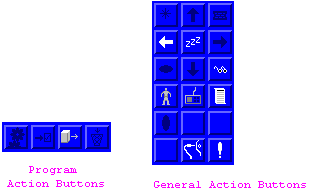To the right of the node view window (and under the software list) are the action buttons. These buttons control your behavior in the matrix. The buttons allow you to move, use programs, access nodes, etc. See Matrix Action Buttons for more details.
Miscellaneous Windows
At the top left of the screen is a clock which shows the current mission time, in seconds (a turn takes one second). This is useful to keep track of events such as mission time limits or system shutdown countdowns. At the bottom of the screen is a message log which show messages of all important events.
Matrix Action Buttons
The matrix action buttons allow you to interface with the system which you are decked in to. Unless otherwise noted, taking an action will end your turn. The buttons are:
Movement Buttons
Movement - These buttons control your movement from node to node. Click one to move to an adjacent node. If a hostile Gateway ICE is blocking the path, you will not be allowed to pass until the ICE is crashed. If a non-hostile Gateway ICE is blocking the path and you have a Hide program active, the ICE may be fooled and allow you to pass. Otherwise, you will have to Deceive the Gateway.
Program Shortcut Buttons
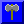 Attack - This button will run the program which you have selected as the default attack program. You must have a default attack program selected, and an ICE targetted to use this button. You may also run attack programs through the software view as you would any other program.
Deceive - This button will run your highest rated Deceive program against the targetted ICE.
View Ice - This button show information about the currently targetted ICE. If the ICE has been analyzed by an Analyze program, more information will be shown. Note that using this button does not end the player’s turn.
Scan - This button will run your highest rated Scan program against the current node (datastores and I/O nodes only).
Information Buttons
These buttons do not end your turn.
View Character - This button opens the Character Data window which displays information about your character. This is the same window that can be accessed from Home.
View Cyberdeck - This button opens the Cyberdeck Configuration window which displays information about your cyberdeck. This is the same window that can be accessed from Home.
View Contract - This button opens the Contract Information window which displays information about your current contract. This is the same window that can be accessed from Home.
Node Access Buttons
These buttons change depending on the type of node you are in. For more information on these actions, see Nodes.
Get File - Retrieve a file from a Data Store.
Edit File - Alter the contents of a file in a Data Store.
Erase File - Deletes a file from a Data Store.
Access I/O - Activates, deactivates, or sabotages the I/O controlled by an I/O node.
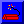 Crash System - Crashes a system. Available in the system CPU. Can only be performed if no Guardian ICE is present.
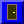 Create Backdoor - Creates a backdoor into the system. Available in the CPU.
Get Map - Retrieves a map of the area from the controlling CPU/SPU.
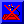 Cancel Shutdown - Cancels a system shutdown which is in progress. Can only be done from a CPU or SPU.
Cancel Alert - Cancels a yellow/red alert. Can only be done at a Security Node. Red alerts can only be cancelled if there is no Guardian ICE in the node.
Remove Trace - Removes a trace that has been completed on you. Can only be done at a Security Node.
Enter Portal - Enters a portal to another area of the system.
Game Control Buttons
Disconnect - Disconnects you from the matrix and returns you home. Be sure you have completed your mission objectives before disconnecting.
Options - Opens the Options window where you can load or save the game.
Program Buttons
These buttons are located under the program list.
 Run Program - Runs the selected program.
Run Program - Runs the selected program.
Set Default Attack Program - Sets the selected program as the default attack program, as described above. Note that using this button does not end the player’s turn.
Load Program - Load a program. You can use this to load a program that was not initially loaded or has crashed, or reload a program that is operating at a reduced rating.
Unload Program - Unload a program. Use this to lighten your deck load.
Keyboard Shortcuts
The following keys can be used in the matrix:
| Arrow Keys | Movement |
| W | Wait |
| V | View Ice |
| A | Attack |
| D | Deceive* |
| S | Scan* |
| Z | Analyze* |
| E | Evaluate* |
| K | Smoke* |
| L | Silence* |
| M | Medic* |
| R | Relocate* |
| C | Decrypt* |
| Tab | Cycle through targets |
| Control - S | Quick Save |
| Control - L | Quick Load |
* These keys run the highest rated program of the specified type that is loaded
ICE
ICE (Intrusion Countermeasure Elements) are semi-autonomous programs which act as the security force for a system. These ICE attempt to keep the system safe from hackers while allowing legitimate users to go about their business. Most ICE can be bypassed with Hide or Deceive programs.
Each ICE has a rating that can be viewed with an Analyze Program. This rating is a measure of the strength of the ICE. The higher the rating, the more likely the ICE is to resist the effects of your programs, and the more likely it is for the ICE to damage you in combat.
ICE falls into two main categories: White ICE and Black ICE. White ICE is always active in a system. Its job is to monitor the normal operations of the system and look for security problems. Once a problem is found, it raises an alarm and activates the Black ICE. Black ICE are the soldiers of the system. They actively seek to attack intruders. Black ICE is normally inactive until a system goes into red alert. White ICE get a bonus to detecting intruders under a yellow or red alert, but have a penalty in combat, while Black ICE incur a penalty to their ability to detect intruders. Although ICE can take on any appearance, there are several general classifications of ICE:
White Ice
Gateway
Gateway ICE acts as a security door from one part of a system to another. It bars passage to anyone who does not have access to that portion of the system. You can use a Hide or Deceive program to bypass a gateway.
Guardian
Guardian ICE guards access to the node itself. If a guardian is present in a node, you must bypass it with a Hide or Deceive program in order to access the node’s functions.
Tapeworm
A tapeworm is similar to a guardian, except that instead of guarding a whole node, it guards a single file within a datastore. The tapeworm is designed to destroy the file it is guarding if it is accessed illegally, or if the tapeworm is attacked. Tapeworms can be bypassed with a Deceive program in order to scan the file, but must be defeated with a Decrypt program in order to access the file.
DataBomb
A databomb is a special type of tapeworm that attacks the Decker as it destroys its file. Otherwise, it is just like a tapeworm.
Probe
Probe ICE wanders the system examining the credentials of users in order to check for people being where they are not allowed. Probes will actively look for users to query. They can be bypassed with a hide or deceive program.
Black Ice
Attack
Attack ICE is the primary response force for a system. Attack ICE seeks to attack the intruder directly. Normally, Attack ICE will attack the intruder’s deck, attempting to dump the intruder from the system. Killer Attack ICE, however, attempts to actually kill the decker (you) by creating neural bio-feedback surges into the decker’s brain. There are two options that an attack ICE may have: Phasing and Hardening.
Phasing is special programming the makes the ICE harder to target by randomly changing its location in the node, making the ICE’s location indistinct. Normal Attack programs have a hard time hitting phasing ICE. However, phasing ICE is vulnerable to Area-Attack programs. Phasing ICE is particularly resistant to Piercing-Attack programs.
Hardening is special programming that makes an ICE more difficult to damage in combat, similar to a decker’s Armor program. Normal Attack programs have a hard time damaging hardened ICE. However, hardened ICE is vulnerable to Piercing-Attack programs. Hardened ICE is particularly resistant to Area-Attack programs.
Trace
Trace ICE attempts to trace the user’s entry point into the system. When a trace ICE attacks the decker and hits, a trace is started. It will take several turns for the trace to complete, in which time you can use a Relocate program to stop the trace, or crash the Trace ICE through normal combat. Once a trace completes, all ICE in the system will automatically know that you are hostile. In addition, your defense and stealth ratings will be lowered.
Normal Trace ICE will stop attacking once your entry point into the system has been traced. Some types of Trace ICE, however, will attempt a second trace to determine your entry point into the matrix, which in effect reveals your real-world location. When it finds this, it will attack your defenseless deck. What happens as a result of this attack depends on the type of ICE. Trace & Dump ICE will immediately dump you from the system. Trace & Fry will dump you from the system, and then attempt to cause a power surge in your cyberdeck to damage one of your chips. Any time an extended trace completes, there is a chance that the corporation will send law enforcement officials to arrest you. The moral of this story is, don’t get traced.
ICE Behavior
Normally, White ICE does its job guarding the system and looking for intruders, while Black ICE is dormant. Probe ICE will wander the system querying anyone it finds, while other white ICE only query those who attempt to access or bypass them. When an ICE queries you, it is asking for your passcode, which says that you are a legitimate user who has permission to be in the system. Since you don’t really have one, you can use a Deceive program to attempt to fool the ICE. If the deceive fails, or if you don’t answer the query, the ICE will set a yellow alert and attempt to query you again. If the system is already in yellow alert and you fail to answer a query, the ICE will set a red alert and mark you as hostile. Under a yellow or red alert, all White ICE get a bonus to their ability to detect intruders. This is because the system is devoting more processing power to the ICE to increase the effectiveness of their detection algorithms. All ICE will also attempt to set a red alert if attacked.
Whenever an ICE recognizes you as hostile, it immediately alerts all other ICE in the same node that you are hostile. In addition, if the node is not silenced, the ICE will alert other ICE in the system to your whereabouts. Most systems allocate a certain amount of Black ICE as ‘response’ ICE, who respond to security alerts. Expect company.
If you leave a node, all ICE which remain in the node lose knowledge of you. If you then reenter that node, the ICE will not automatically know that you are hostile. They may, however, query you to determine your legitimacy. The exception to this rule is that if you are being trailed by an ICE who knows that you are hostile, it will alert all ICE in the node that you are hostile. What this means is that as long as one ICE who knows you are illegal is following you from node to node, any ICE you encounter will learn of your hostility.
Nodes
Nodes are virtual rooms inside a matrix system. A node has no real-world equivalent. It is simply a collection of system data or functions that are grouped together in order to present an organized environment for users. Movement within a node is instantaneous, because, from a system point of view, you are either in the node or not; Location within the node doesn’t matter. You may freely move between nodes as log as you are not stopped by a Gateway ICE.
Each node presents a set of operations that can be performed by users. The operation type varies from node to node, but is consistent for a given node type. For example, every datastore allows users to download files. However, some node functions may be restricted to certain users. If this is the case, the node will have a Guardian ICE present. Since you will never be a legitimate user, you will have to bypass this ICE in order to access the node functions. If there are any hostile Guardian or Black ICE in a node, they will prevent you from accessing node functions. Additionally, many node operations require a skill check in order to complete successfully, such as canceling a system alert.
Larger systems may be broken up into several distinct areas. An area is a subset of the system nodes that are interconnected, and governed by a CPU or SPU. These areas will be linked together via Portal nodes. Most ICE will not leave its home area.
These are the node types that you will encounter in a system:
CPU
The CPU (Central Processing Unit) is the heart of the system. It controls all of the other nodes. There will be only one CPU in a system, and it will be located in the deepest area of the system.
Node Functions:
Crash System - Immediately crashes the entire system. This is usually done in order to fulfill a contract. If you fail at an attempt to crash a system, the system will automatically go to red alert. Note that crashing the system automatically dumps you from the matrix. You must defeat all ICE guarding the CPU in order to crash the system.
Create Backdoor - Creates a backdoor into the system, which allows you to enter the system at the CPU node on subsequent visits to the system. However, the backdoor will eventually be detected by the system administrators and removed. You may also have to create a backdoor in order to fulfill a contract. If you fail in an attempt to create a backdoor, there is a small chance that you will accidentally trigger a red alert.
Get Area Map - Gives you a complete map of all of the nodes in the area controlled by the CPU. Also denotes many special locations such as I/O node ICE port, etc.
Halt System Shutdown - If the system going offline due to a red alert, you may stop the shutdown here. This will not prevent the system from trying to go offline later.
SPU
An SPU (Sub-Processing Unit) is similar to a CPU, but it controls only one a single area, instead of the entire system.
Node Functions:
Get Area Map - Gives you a complete map of all of the nodes in the area controlled by the SPU. Also denotes many special locations such as I/O node ICE port, etc.
Halt System Shutdown - If the system going offline due to a red alert, you may stop the shutdown here. This will not prevent the system from trying to go offline later.
Portal
A Portal is a doorway into the system or from one area of the system to another. When you first enter the system, you will be in the Portal that acts as the front door to the system. Portals also link one system area to another.
Node Functions:
Enter Portal - Transports you from one system area to another. You cannot use this function in the system entry portal because to do so would be leaving the system, which you can do any time you wish by using the disconnect button.
Data Store
A Data Store is a place where data is stored (go figure). The data is represented as a list of files. Some of the files may be valuable, but most are worthless. Often, the objective of a contract requires locating a particular file. Scan and Evaluate programs are used to analyze the files in a datastore. Files are sometimes protected by Tapeworm ICE. These files cannot be accessed until the Tapeworm is defeated with a Decrypt program.
Node Functions:
Download File - Transfers a copy of the file from the Data Store to your cyberdeck. You will be prompted with a list of files from which you can select which one to download. The download may take a number of turns depending on the size of the file. If you leave the node before the transfer is complete the transfer will be cancelled.
Edit File - Alters the contents of a file. This is only used when a contract requires it. This also takes time, but not as long as a download.
Erase File - Erases the file from the datastore. This is only used when a contract requires it. Erasing a file takes only one turn.
File Types:
- Worthless - The name says it all.
- Valuable - Worth some money. Evaluation will show the actual amount of credits it is worth. Must be downloaded to collect.
- Clue - When evaluated will display the name of the node where the contract objective resides, and denote the node on the map.
- Passcode - When evaluated will give a bonus to all Deceive and Decrypt attempts in the system.
- Contract - The file you must steal and/or erase to complete your mission.
- Program/Source - These are standard programs or program/chip source code that can be downloaded for later use. Programs that are downloaded will not be available until you exit the matrix.
I/O Node
An I/O (Input/Output) Node is a connection from the system to some external device. Most I/O nodes control real-world things, like elevators and security alarms. There are some special types of I/O nodes, however, which you may be on the lookout for:
ICE Entry Node - Every area of a system contains an ICE entry I/O node. This node is where ICE are introduced into the system. ICE which have been crashed will eventually be reloaded by the system, and will appear in this node. By deactivating this node, you can block the entry of ICE into a system, so that once an ICE is crashed, it is dead forever.
System Alarm Node - Every system also contains a system alarm I/O node. This is a connection to external alarm systems that notify system operators that a security breach has been detected. Whenever a system goes into red alert, this node sends messages to let the administrators know about it. The administrators, once they learn of the alert, may attempt to take the system off-line, which will result in you being dumped from the system. By deactivating this node before a red alert occurs, you can prevent notification of the alert from reaching the real world, and therefore no attempt to take the system off-line will be made.
High Speed Matrix Port - Some of the larger systems will have a high-speed matrix port I/O node. This is a private matrix connection used for high-speed access. By activating this node, you are routing your deck connection through this high-speed line. This allows you to upload any program or download any file in a single turn, as long as you are in the same area as the high-speed matrix port.
Node Functions:
Access I/O - Activate/Deactivate/Crash the I/O that this node controls. Usually used for completing a contract’s objectives. If you access a normal (non-contract, non-special) I/O node, there is a chance that you will accidentally trigger an alert.
Coprocessor
A coprocessor is a node that helps the CPU/SPU process data. They often act as controllers for other nodes, and assist with systems security. Coprocessors are also the normal resting place for response ICE (ICE which respond to intruder alerts.) No functions are normally available.
There is one type of coprocessor that you should be on the lookout for: the area Security Node. The Security Node acts as the head of security for the area. In a security node, the following operations are available:
Cancel Alert - If the system is in yellow or red alert, you may cancel the alert here. Red alerts can only be cancelled if there is no guardian ICE in the node.
Remove Trace - If an ICE has completed a trace against you, you may remove this trace at the security node.
Junction
A junction is simply a place where two or more data lines (paths between nodes) intersect. They serve no real purpose other than to act as a crossroads. No functions are available.
Miscellaneous
Credits
Game Design, Art, and Programming - Shawn Overcash
Sound Effects - Aaron Smith
About the Game
Decker was inspired by the ShadowRun™ roleplaying system, as well as by the works of author William Gibson (who invented the term ‘cyberspace’). I took many of my ideas from the second edition ShadowRun matrix rules. I created the game because I always loved the old Neuromancer game for the PC, and no decent hacker-type games have been built since then (to my knowledge). The game is still a ‘work in progress’, and probably always will be. There’s always room for more.
About the Author
I am a professional C/C++ programmer, and a thoroughly addicted computer gamer. This is the largest game I have created so far. My only other notable works are a BattleTech™ Mech editor which allows you to design BattleMechs and print out game sheets for the BattleTech boardgame, and a computer conversion of FASA’s Inner Sphere strategy game. Having a full-time job, and three children, I have to find time to squeeze in to program these games. Also, as you have noticed, my artwork is terrible.
Contribution
Decker is now available as an open source project on SourceForge.net. You can reach Decker’s project page at this address:
https://sourceforge.net/projects/decker/
Thanks for playing.